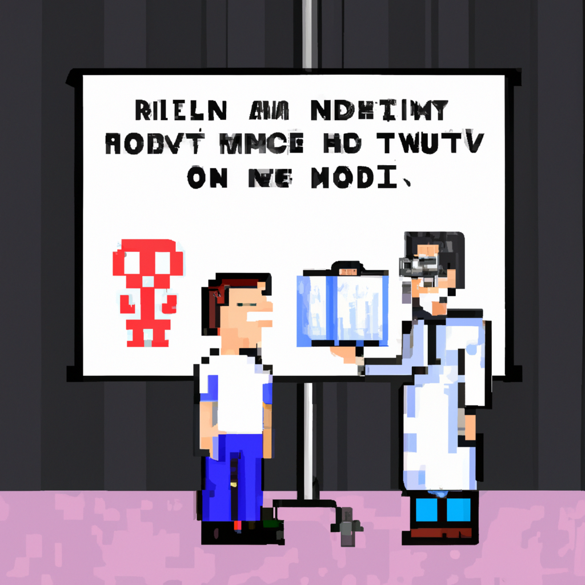

Why AI will never replace the radiologist
In recent years, the development of Artificial Intelligence (AI) and Machine Learning (ML) systems have enabled rapid advances in the medical field, particularly in the radiology field. It is no secret that AI can help radiologists detect certain diseases and anomalies more quickly and accurately than ever before.
However, despite these advancements, many experts in the field strongly believe that AI will never replace the radiologist. AI has its place in the radiology field, but it is important to note that AI will never be able to replace a human radiologist in many ways.
One of the primary reasons for this is that AI systems are only as accurate as the data that is fed to them. AI systems are great at quickly analyzing large data sets, but they are not able to make judgement calls or decisions that require a level of intuition and experience.
Radiologists are trained to recognize patterns and anomalies that AI systems cannot. They are also able to draw on their experience to make decisions that AI systems cannot. This level of expertise and knowledge cannot be replaced by any AI system.
Finally, AI systems are not able to provide the same level of emotional care and understanding as a radiologist. AI systems are cold and mechanical, whereas radiologists are able to provide empathy and personal care to their patients. This level of care is invaluable in the medical field and cannot be replaced by any AI system.
In conclusion, AI is an incredibly powerful tool and can be used to help radiologists detect certain diseases and anomalies more quickly and accurately than ever before. However, AI will never be able to replace the radiologist. The level of expertise, intuition, and empathy that radiologists bring to the table cannot be replaced by any AI system.